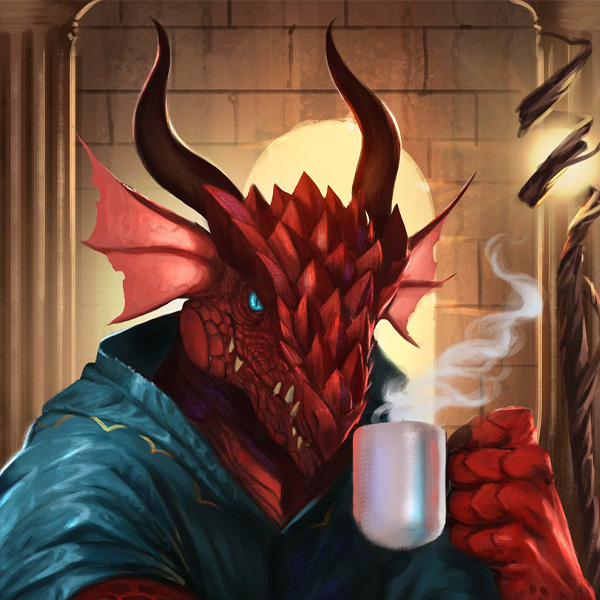

Dragonborn
In Celestia, Dragonborn are treated in a highly negative manner, viewed as little more than beasts and their intellect and sentience disregarded. They are often taken as slaves and treated as beasts of burden, with their natural abilities suppressed using magic suppressing collars. Dragonborn who are raised as slaves in Celestia tend to be uneducated and rough due to their harsh treatment, but they are by no means the dumb animals they are perceived to be.
The discrimination against Dragonborn in Celestia is deeply ingrained in the societal norms and beliefs of the people. They are considered inferior and subjugated, with their abilities and potential ignored or suppressed. This mistreatment of Dragonborn is a result of the negative perception towards dragons, as Dragonborn are humanoid beings with draconic heritage. The fear and animosity towards dragons in Celestia have been extended to Dragonborn as well, despite their individuality and sentience.
